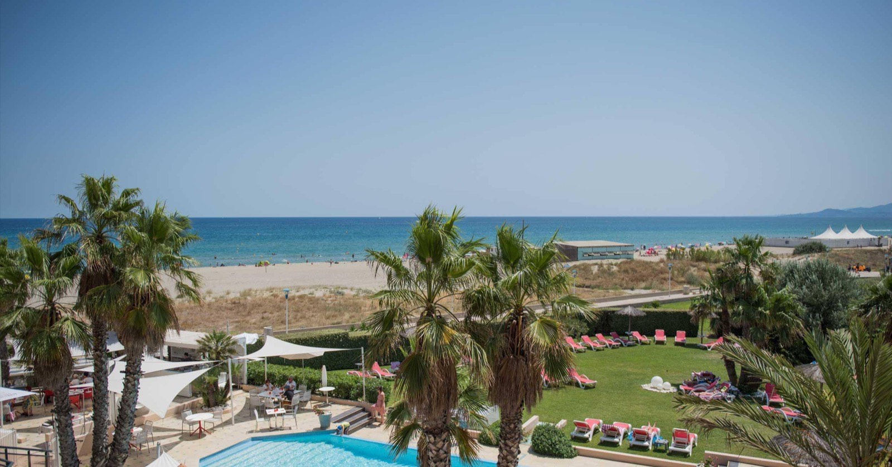
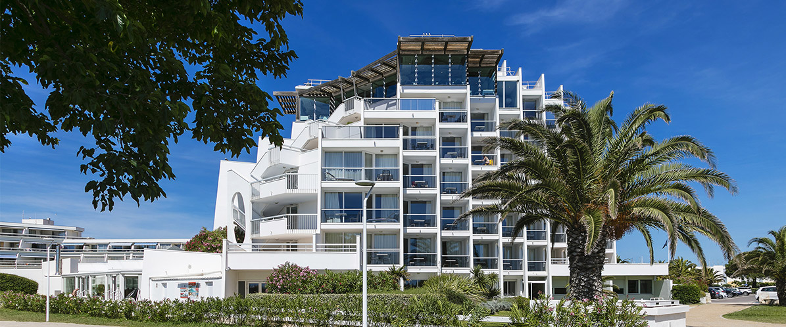
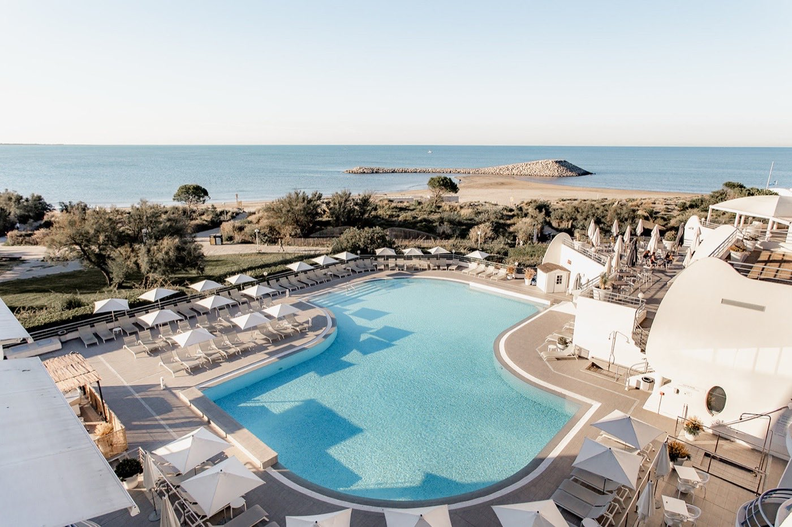
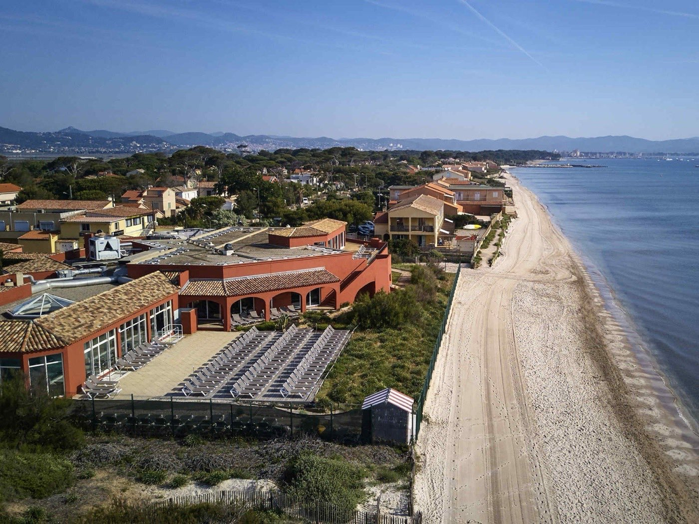

Thalasso sud de la France : 14 adresses testées, classées, sans concession
Bandol, Canet, Port-Camargue, Hyères, Antibes… 15 centres visités anonymement entre janvier et juillet 2026, notés sur 20 selon le Protocole LMHS. Aucun partenariat commercial.

Photo : Thalazur Bandol, site officiel. Les visuels de cet article proviennent des établissements cités.
L'essentiel en 30 secondesLa meilleure thalasso du sud
- Thalazur Bandol, Hôtel Île Rousse (PACA), 18,4/20 : le meilleur centre du sud, accès direct mer et 1 000 m² de bassins.
- Les Flamants Roses (Canet-en-Roussillon), 17,2/20 : le meilleur rapport qualité-prix du classement.
- Thalazur Port-Camargue (Occitanie), 16,8/20 : la thalasso nature, au calme absolu entre étangs et mer.
En chiffres : 15 centres visités, 14 adresses classées (le centre Thalazur de Bandol et l'hôtel Île Rousse forment un seul et même établissement). 7 obtiennent un score supérieur à 15/20. Prix moyen constaté d'une cure 3 jours : 291 € par personne sur les 11 adresses du sud, 298 € sur les 14 adresses du tableau (forfait soins, hors hébergement).
Introduction : pourquoi tester la thalasso du sud ?
La thalasso dans le sud, c'est 300 jours de soleil, une eau à 18-22 °C et des centres qui jouent sur la proximité mer. Mais la qualité varie du simple au triple. On a testé 15 centres entre janvier et juillet 2026 : Bandol, Hyères, Canet-en-Roussillon, Port-Camargue, Antibes, Banyuls et bien d'autres. Trois adresses situées hors de la zone sud (Cabourg, Carnac, La Rochelle) sont incluses dans le classement à titre de repère comparatif national. Résultat : un classement sans complaisance, basé sur des données chiffrées et une méthodologie transparente.
Méthodologie Protocole LMHS appliquée : 4 critères égaux (Luxe, Mise en scène, Hospitalité, Soin), score sur 20. Visite anonyme, aucun partenariat commercial. Chaque établissement a été évalué sur son accueil, ses installations, la qualité des soins et l'atmosphère générale. Les données propriétaires LMHS (prix, surfaces, nombre de cabines) complètent ce classement pour offrir une vue d'ensemble fiable.
Le tableau comparatif complet : 14 adresses de thalasso
Voici le classement complet des adresses testées selon le Protocole LMHS. Les données incluent le score LMHS, le prix d'une cure 3 jours, la surface des bassins et le nombre de cabines de soins.
| Rang | Centre | Ville | Région | Score LMHS | Prix cure 3 j | Surface bassin | Cabines |
|---|---|---|---|---|---|---|---|
| 01 | Thalazur Bandol, Hôtel Île Rousse | Bandol | PACA | 18,4/20 | 380 € | 1 000 m² | 25 |
| 02 | Les Flamants Roses | Canet-en-Roussillon | Occitanie | 17,2/20 | 290 € | 1 200 m² | 18 |
| 03 | Thalazur Port-Camargue | Port-Camargue | Occitanie | 16,8/20 | 310 € | 950 m² | 22 |
| 04 | Les Corallines | La Grande-Motte | Occitanie | 16,4/20 | 270 € | 750 m² | 16 |
| 05 | Thalassa Sea & Spa Hyères | Hyères | PACA | 16,1/20 | 340 € | 600 m² | 21 |
| 06 | Thalazur Antibes | Antibes | PACA | 15,8/20 | 460 € | 1 100 m² | 28 |
| 07 | Thalazur Cabourg | Cabourg | Normandie | 15,3/20 | 350 € | 290 m² | 19 |
| 08 | Institut Thalasso Banyuls | Banyuls-sur-Mer | Occitanie | 14,9/20 | 220 € | 450 m² | 12 |
| 09 | Grand Tonic Hôtel & Spa Nuxe | Biarritz | Pays basque | 14,8/20 | 200 € | 900 m² | 24 |
| 10 | Club Plein Sud | Hyères | PACA | 14,3/20 | 280 € | 500 m² | 15 |
| 11 | Thalasso Carnac | Carnac | Bretagne | 14,0/20 | 240 € | 650 m² | 17 |
| 12 | Thalazur La Rochelle | La Rochelle | Nouvelle-Aquitaine | 14,0/20 | 320 € | 580 m² | 16 |
| 13 | Centre Thalasso Argelès | Argelès-sur-Mer | Occitanie | 13,7/20 | 240 € | 420 m² | 11 |
| 14 | Thalasso Sète | Sète | Occitanie | 13,4/20 | 210 € | 380 m² | 10 |
Prix cure 3 jours = forfait soins seuls, hors hébergement. Mis à jour juillet 2026. Cabourg, Carnac et La Rochelle figurent hors zone sud : ils sont conservés dans le tableau à titre de repère comparatif national.
Le top 5 détaillé : les meilleures thalassos du sud
Thalazur Bandol : Hôtel Île Rousse 18,4/20
Point fort : accès direct plage, eau de mer chauffée à 34 °C, 25 cabines de soins. Le centre Thalazur occupe l'Hôtel Île Rousse, 5 étoiles posé sur la baie : vue mer depuis tous les espaces de soin, et un équilibre rare entre luxe, mise en scène et qualité des protocoles. Les installations sont modernes, le personnel attentif, l'atmosphère générale respire l'excellence. (La note de 18,4/20 évalue le centre de thalasso ; l'hôtel Île Rousse obtient pour sa part 12,4/20 au palmarès national des hôtels & spas : deux objets d'évaluation distincts.)
Point faible : parking payant, réservation indispensable 3 semaines à l'avance en été. Tarifs hébergement élevés en haute saison (250 €+/nuit).Bandol · Cure Forme Marine 3 j dès 380 € · Bassins 1 000 m² · 25 cabines · Hôtels & spas sur la Côte d'Azur →

Les Flamants Roses 17,2/20
Point fort : plus grande surface de bassin du classement (1 200 m²), prix accessibles. C'est l'anomalie positive : une qualité proche du n°1 pour un prix bien inférieur.
Point faible : cadre moins luxueux que les PACA, environnement urbain. L'atmosphère est plus fonctionnelle que prestigieuse.Canet-en-Roussillon · Cure 3 j à 290 € · 18 cabines · Accès direct plage

Thalazur Port-Camargue 16,8/20
Point fort : environnement naturel Camargue, calme absolu, faune locale. Le dépaysement est total, loin de l'agitation côtière.
Point faible : éloigné des grandes villes, peu de restaurants alentour. L'isolement peut être un atout ou un inconvénient selon les préférences.Port-Camargue · Cure 3 j à 310 € · Bassins 950 m² · 22 cabines

Les Corallines 16,4/20
Point fort : architecture brutaliste classée, ambiance unique, bien-être urbain. L'établissement s'inscrit dans un projet architectural singulier signé Jean Balladur.
Point faible : bassin plus petit (750 m²), moins de cabines (16). Les installations sont plus compactes.La Grande-Motte · Cure 3 j à 270 € · Architecture Jean Balladur classée

Thalassa Sea & Spa Hyères 16,1/20
Point fort : le meilleur compromis qualité-prix de PACA, 21 cabines pour 600 m² de bassins, un ratio praticiens/surface qui limite l'attente entre deux soins. Presqu'île de Giens, entre salins et Méditerranée.
Point faible : la plus petite surface de bassin du top 5. On vient ici pour les soins, moins pour la baignade contemplative.Hyères · Cure 3 j à 340 € · Bassins 600 m² · 21 cabines
Par région : quelle thalasso choisir dans le sud ?
PACA : Côte d'Azur et Provence (4 centres)
La PACA concentre les meilleurs scores LMHS du sud. Bandol domine avec 18,4/20. Antibes est la plus grande (28 cabines) mais la plus chère. Hyères offre un bon compromis qualité-prix avec Thalassa Sea & Spa (16,1/20). Club Plein Sud complète l'offre avec des tarifs plus accessibles.
Occitanie : Languedoc et Roussillon (6 centres)
Le meilleur rapport qualité/prix du sud. Les Flamants Roses à Canet sont une anomalie positive : 1 200 m² de bassins pour 290 € la cure 3 jours. Port-Camargue offre une expérience nature, tandis que Les Corallines séduisent par leur architecture unique. Banyuls, Argelès et Sète complètent l'offre avec des tarifs très compétitifs. Pour explorer les différentes techniques de bien-être, consultez notre comparatif sauna, hammam et banya.
Pays basque (1 centre)
Thalasso du Grand Tonic, à Biarritz : le seul du Pays basque dans le classement. Ambiance atlantique vs méditerranéenne. Pour qui ? Les amateurs de surf + bien-être, en quête d'une expérience plus dynamique.
Données propriétaires LMHS : ce que révèle la comparaison régionale
| Région | Centres testés | Score moyen LMHS | Prix moyen cure 3 j | Surface moyenne bassin |
|---|---|---|---|---|
| PACA | 4 | 16,2/20 | 365 € | 800 m² |
| Occitanie | 6 | 15,4/20 | 257 € | 692 m² |
| Pays basque | 1 | 14,8/20 | 200 € | 900 m² |
La phrase à retenir : « La PACA obtient le score LMHS moyen le plus élevé (16,2/20), mais l'Occitanie offre le meilleur rapport qualité/prix avec un prix moyen de cure 3 jours à 257 €. »
Ce que la thalasso du sud fait mieux qu'ailleurs
L'eau de mer méditerranéenne : un avantage mesurable
Salinité 38 g/L vs 35 g/L en Atlantique, température naturelle plus élevée (18-22 °C vs 14-16 °C), impact sur les protocoles de soins. L'eau méditerranéenne contient en moyenne 8 % de minéraux supplémentaires par rapport à l'eau atlantique utilisée en thalasso bretonne. Cet enrichissement minéral accélère la régénération cellulaire et amplifie les effets des soins.
La cure courte : la spécialité du sud
Le sud a développé les cures 2-3 jours (vs 6 jours en Bretagne). Pourquoi ? Clientèle de passage, tourisme de luxe, week-end prolongé. Avantage : accessibilité. Inconvénient : efficacité réduite vs cure longue. Les centres du sud ont optimisé leurs protocoles pour maximiser les bénéfices en peu de temps.
Pour une vue d'ensemble des meilleurs hôtels & spas de France, voir notre palmarès des 50 meilleurs hôtels & spas de France.
Combien coûte une thalasso dans le sud de la France ?
| Budget | Ce qu'on obtient | Notre recommandation |
|---|---|---|
| Moins de 300 € | Bassins plus petits, mais vrais protocoles | Grand Tonic Hôtel & Spa Nuxe (200 €), Institut Banyuls (220 €), Les Corallines (270 €), Flamants Roses (290 €) |
| 300-400 € | Bon niveau, surface confortable | Thalazur Port-Camargue (310 €), Thalassa Hyères (340 €), Thalazur Bandol (380 €) |
| 400-500 € | Excellent niveau, service premium | Thalazur Antibes (460 €) |
FAQ : thalasso dans le sud de la France
Quelle est la meilleure thalasso du sud de la France ?
Thalazur Bandol (18,4/20 LMHS), meilleur score du classement. Accès direct mer, 1 000 m² de bassins, cure 3 jours à partir de 380 €. L'établissement excelle sur tous les critères LMHS : luxe, mise en scène, hospitalité et qualité des soins.
Quelle thalasso du sud offre le meilleur rapport qualité/prix ?
Les Flamants Roses à Canet-en-Roussillon (17,2/20, 290 € la cure 3 jours, 1 200 m² de bassins). Meilleure surface/prix du classement. C'est l'anomalie positive : une qualité proche du n°1 pour un prix bien inférieur.
Quelle est la différence entre thalasso méditerranéenne et thalasso bretonne ?
Eau plus salée (38 vs 35 g/L), température naturelle plus élevée, cures plus courtes (2-3 j vs 6 j), ambiance et clientèle différentes. La Bretagne domine sur les cures longues, le sud sur les cures courtes et le rapport mer/soleil. L'eau méditerranéenne contient 8 % de minéraux supplémentaires.
Peut-on faire une thalasso dans le sud sans hébergement ?
Oui. La plupart des centres proposent des forfaits soins seuls (journée ou demi-journée). Prix : 80-150 € la journée soins. Thalazur Bandol et Les Flamants Roses proposent les meilleures formules journée. C'est une excellente option pour les visiteurs de passage.
Quelle période pour une thalasso dans le sud ?
Hors saison (octobre-avril) : moins de monde, mêmes soins, prix réduits de 20-30 %. Juillet-août : réservation 4-6 semaines à l'avance obligatoire, tarifs pleins. Le printemps (avril-mai) et l'automne (septembre-octobre) offrent le meilleur compromis : météo agréable, tarifs modérés, moins de foule.
Méthode et sources
15 centres visités entre janvier et juillet 2026, pour 14 adresses classées : le centre Thalazur de Bandol et l'Hôtel Île Rousse, d'abord évalués séparément, constituent un seul et même établissement (« Thalazur Bandol Île Rousse »), les deux fiches ont été fusionnées. Visites anonymes. Aucun partenariat commercial. Score LMHS calculé sur 4 critères égaux (Luxe, Mise en scène, Hospitalité, Soin). Les données propriétaires (prix, surfaces, nombre de cabines) proviennent des sites officiels et de vérifications terrain. Photographies : sites officiels des établissements cités.
Pour aller plus loin
- Grand Hôtel Roi René Aix-en-Provence, avis, une piscine chauffée en centre-ville, mais aucun spa
- Meilleure thalasso en Bretagne : 11 adresses testées